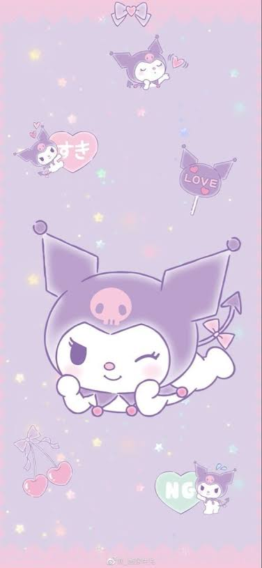
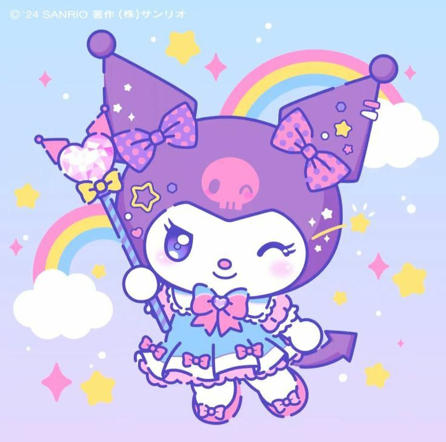

Class Activity
Jigsaw Activity: Oxford’s LLS
Rebecca Oxford’s memory, cognitive, and social strategies, explained by my group.

What We Did
Learning together, one piece at a time

In this class, we worked on Language Learning Strategies in groups through a jigsaw activity, where each team prepared one part of the topic to explain it to the rest of the classroom and put all the information together. My group was in charge of the first poster, which covered Rebecca Oxford’s memory, cognitive, and social strategies.
Doing this as a team really helped us connect the theory to what we do in real life. While we were organizing how we associate images or sounds to remember vocabulary, how we practice the language, and how we learn by talking or asking others for help, I realized these are habits we apply almost automatically when studying.
What I liked the most about this exercise was how the classroom dynamic worked. As a future teacher, I found it to be a very practical way to learn because it pushed us to really understand our section in order to explain it clearly and simply to our classmates. Collaborating as a group also helped us agree on which ideas were most important and how to organize them visually so everyone could follow along easily.
The Posters
Infographics from every group
Below are the infographics created by all the groups during class.
1 / 6